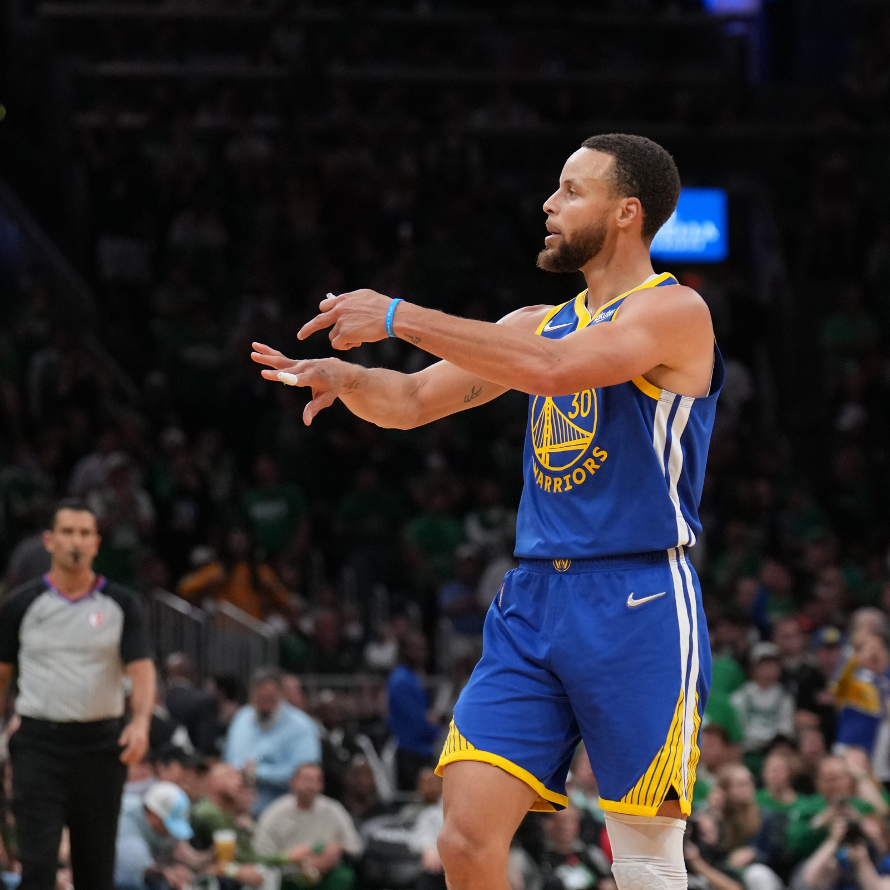

Kobe Bryant
September 26, 2023 by Kyle Stultz

Kobe Bean Bryant (August 23, 1978 – January 26, 2020) was an American professional basketball player, who spent his entire 20-year career with the Los Angeles Lakers in the NBA.
Playing shooting guard his entire career, Bryant is regarded as one of the greatest basketball players of all time, and arguably the greatest Laker of all time.
His resume includes winning five NBA championships, two NBA Finals Most Valuable Player Awards, the 2007-08 NBA Most Valuable Player Award.
Also, along with being an 18-time All-Star, a 15-time member of the All-NBA Team, and a 12-time member of the All-Defensive Team.
Bryant also led the NBA in scoring twice in 2006 and 2007, and ranks fourth in league all-time regular season and postseason scoring respectively.
He was posthumously voted into the Naismith Memorial Basketball Hall of Fame in 2020 and named to the NBA 75th Anniversary Team in 2021.
To process the deluge of data from wind tunnels and other experiments, Langley needed number crunchers. It found them in “human computers”.
These mathematicians were all women and, thanks to a recent executive order banning racial discrimination in defence hiring, many – like Vaughan – were black.
Stephen Curry
September 26, 2023 by Kyle Stultz

Wardell Stephen Curry II (March 14, 1988) is an American professional basketball player for the Golden State Warriors of the NBA.
Widely regarded as the greatest shooter and one of the greatest players of all time, Curry is credited with revolutionizing the sport by inspiring teams and players to take more three-point shots.
He is a four-time NBA champion, the 2022 NBA Finals Most Valuable Player, a two-time league NBA MVP, and the 2022 NBA All-Star Game MVP.
Also, Curry is a nine-time NBA All-Star, and a nine-time All-NBA selection, including four times on the first team.
In 2014–15, Curry won his first league MVP award and led the Warriors to their first championship since 1975.
The following season, he became the first player to be elected MVP by a unanimous vote and lead the league in scoring while shooting above 50–40–90.
That same year, the Warriors broke the record for the most wins in an NBA season with 73 wins, reaching the 2016 NBA Finals, which they lost to the Cleveland Cavaliers in seven games.
Curry led the Warriors return to the NBA Finals in 2017, 2018, and 2019, winning back-to-back titles in 2017 and 2018, but losing to the Toronto Raptors in 2019.
After missing the playoffs in 2020 and 2021, Curry won a fourth championship with the Warriors, defeating the Boston Celtics in the 2022 NBA Finals, and was named Finals MVP for the first time.